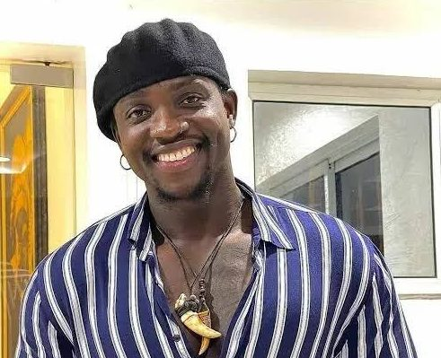
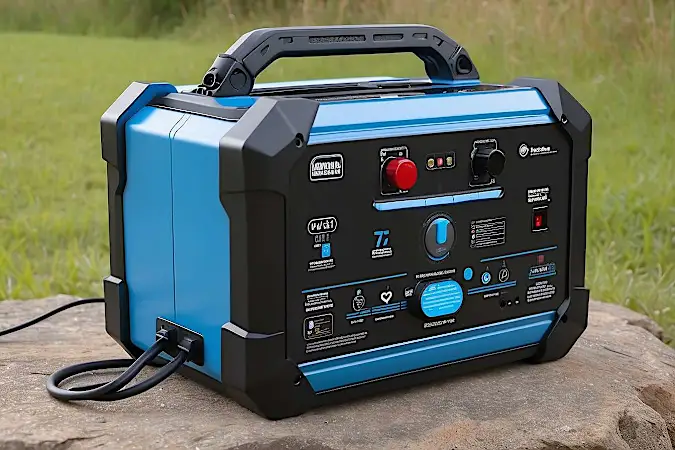
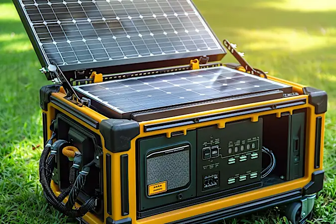

<!DOCTYPE html>
<html lang="en">
  <head>
    <meta charset="UTF-8" />
    <meta name="viewport" content="width=device-width, initial-scale=1.0" />
    <meta http-equiv="X-UA-Compatible" content="ie=edge" />
    <link rel="stylesheet" href="style1.css" />
    <title>Document</title>
  </head>
  <body></body>
</html>
<header>
  <nav class="navbar">
    <div class="logo">
      Ebenezer Oyase
    </div>
    <ul class="nav-links">
      <li><a href="home.html">Home</a></li>
      <li><a href="aboutus.html">About</a></li>
      <li><a href="blog.html">Blog</a></li>
      <li><a href="contactus.html">Contact Us</a></li>
      <li><a href="service.html">Contact Us</a></li>
    </ul>
    <div class="burger">
      <div class="line1"></div>
      <div class="line2"></div>
      <div class="line3"></div>
    </div>
  </nav>
</header>

<main>
  <section>
  <section>
    <div class="container pt-5">
      <div>
        <h1>VeryDarkMan unveils NGO, receives N33m in 24 hours</h1>
        
        <p style="border-left: 6px solid red">Martins Vincent Otse, aka VeryDarkMan</p> <br>
      </div>
      
    </div>
    <div>
      <p style="border-left: 6px solid red">By Olugbenga Ige</p>
    </div>
    <p>A controversial social media celebrity, VeryDarkMan, has launched a Non-Governmental Organization.</p>
    <p>In a post alongside a video via his Instagram page, @verydarkblackman, on Saturday, VeryDarkMan said the NGO
      will focus on community development and equipping public schools.</p>
    <p>The social media activist rallied for support and promised transparency and accountability. </p>
    <P> He wrote, “@davido you don ask my for my account details before @cubana_chiefpriest you have told me to ask
      you for help anytime. Today is that time (to those of you in my dms asking for my account details to support me,
      today is the day; to the ones when I help collect money wey been wan pay me, today is the day.) Does Ben have a
      soft spot for Anita? | Zinwe's eviction, age drama between Topher and Anita0:00 / 1:01 </p>
  </section>
  <div class="container">
    <div class="content">
      <p>
        "I will be very transparent. I will post the money that was contributed online for everyone to see, and I will
        carry everyone along. Every money will be well accounted for. If you believe this will bring change, please
        support it. No amount is too small; even 5 naira is welcomed. Like I said, any amount is welcome."
      </p>
      <div style="border-radius: 6px solid red" class="related-news">
        <h2>Related News</h2>
        <ul>
          <li><a href="#">Bobrisky: Group urges Tinubu to act on death threats against Falana's daughter</a></li>
          <li><a href="#">I've never asked for a Kobo to write pardon letter - Falana</a></li>
          <li><a href="#">Knocks, kudos as VeryDarkMan shares another alleged call recording of Bobrisky</a></li>
        </ul>
        <p>
          In another Instagram post on Sunday, VeryDarkMan disclosed that he has received over N33 million in
          donations within 24 hours.

          He also shared a screenshot of the total donations and thanked donors for their contributions. The activist
          said most individuals gave N500 or less, demonstrating their willingness to support despite financial
          constraints.
        <p>
          “Barely 24 hours since I announced my NGO, if I tell you how much is in that account now, you would not
          believe it. First of all, shout out to all the people who have sent money, shout out to the people sending
          money. God will bless you.

          “I saw the massive love and support when I started seeing amounts like N72, N100, N22, N50, N500. To be very
          honest, most of the money that was contributed was from N500 naira down. It means most of these people no
          get, but they want to support me. The love is massive,” he wrote.

          The activist had, in past weeks, been enmeshed in a controversy involving a popular crossdresser, Idris
          Okuneye, widely known as Bobrisky, over allegations of bribery and corruption.
        </p>
        </p>
      </div>
    </div>

    <div class="advertisement">
      <div class="ad-box">
        
        <h3>Download & Transact to Redeem Your N20,000 Superbonus</h3>
        <p>Download Smartcash PSB app:</p>
        <div class="app-links">
          <a href="#"></a>
          <a href="#"></a>
        </div>
      </div>
    </div>
  </div>
  <div>
    <div class="profile">
      <h2>Olugbenga Ige</h2>
      <p>Olugbenga is a fine-grained journalist with over nine years of experience. He loves the smell of a good lead
        and has a penchant for finding out interesting good reports.</p>
    </div>

    <div class="sponsored-section">
      <h3>Sponsored Stories</h3>
      <div class="sponsored-items">
        <div class="sponsored-item">
          
          <h4>Electrician Reveals: 1 Simple Trick to Slash...</h4>
          <p>Sponsored | Smart Energy</p>
        </div>
        <div class="sponsored-item">
          
          <h4>Affordable Solar Energy for Every...</h4>
          <p>Sponsored | Solar Systems & Power</p>
        </div>
        <div class="sponsored-item">
          
          <h4>2024 New Mobile Stair Lifts: Perfect f...</h4>
          <p>Sponsored | Stair Lift | Search...</p>
        </div>
      </div>
    </div>
    <div class="footer-section">
      <!-- Share Section -->
      <div class="share-section">
        <p>Kindly share this story:</p>
        <div class="social-icons">
          <a href="#"></a>
          <a href="#"></a>
          <a href="#"></a>
          <a href="#"></a>
          <a href="#"></a>
          <a href="#"></a>
        </div>
      </div>

      <!-- Copyright Section -->
      <div class="copyright-section">
        <p>All rights reserved. This material, and other digital content on this website, may not be reproduced,
          published, broadcast, rewritten or redistributed in whole or in part without prior express written
          permission from PUNCH.</p>
        <p><strong>Contact:</strong> theeditor@punchng.com</p>
      </div>

      <!-- CTA Section -->
      <div class="cta-section">
        <p>Stay informed and ahead of the curve! Follow The Punch Newspaper on WhatsApp for real-time updates,
          breaking news, and exclusive content. Don't miss a headline – join now!</p>
        <a href="#" class="cta-button">Join The Punch Newspapers Channel</a>
      </div>
    </div>
  </div>

</section>
</main>
